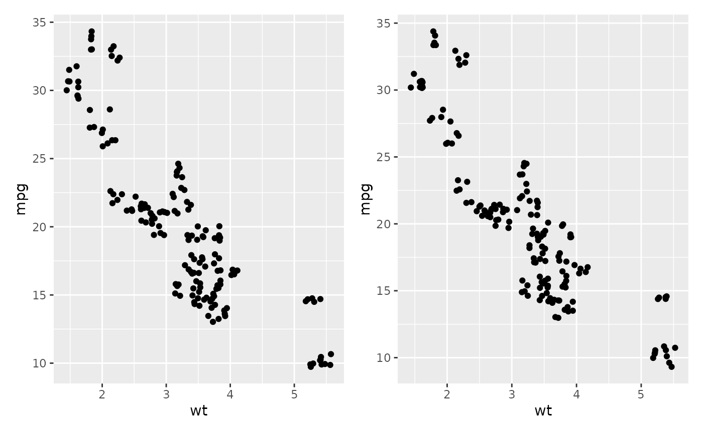
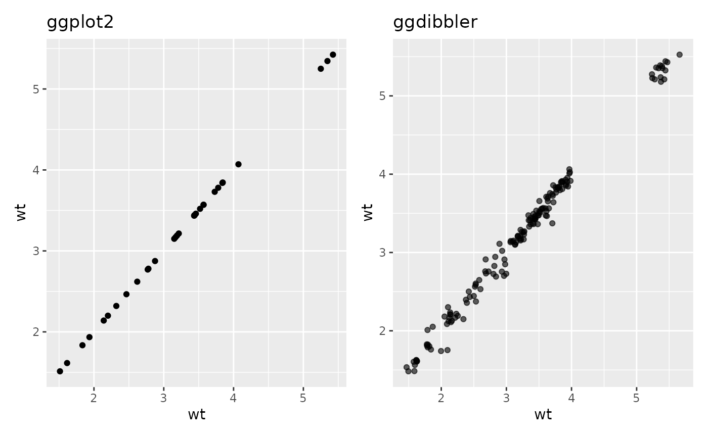
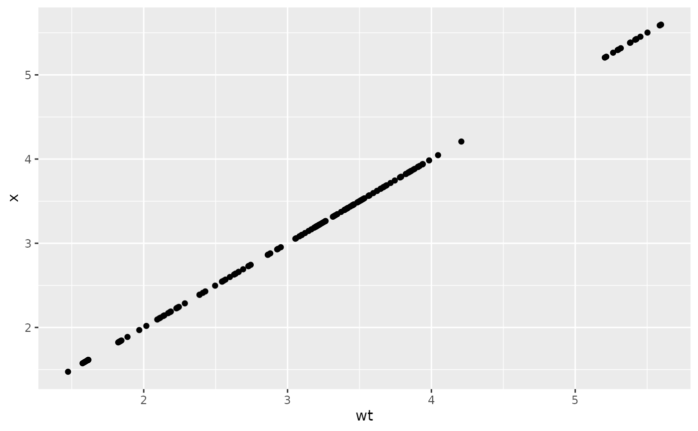
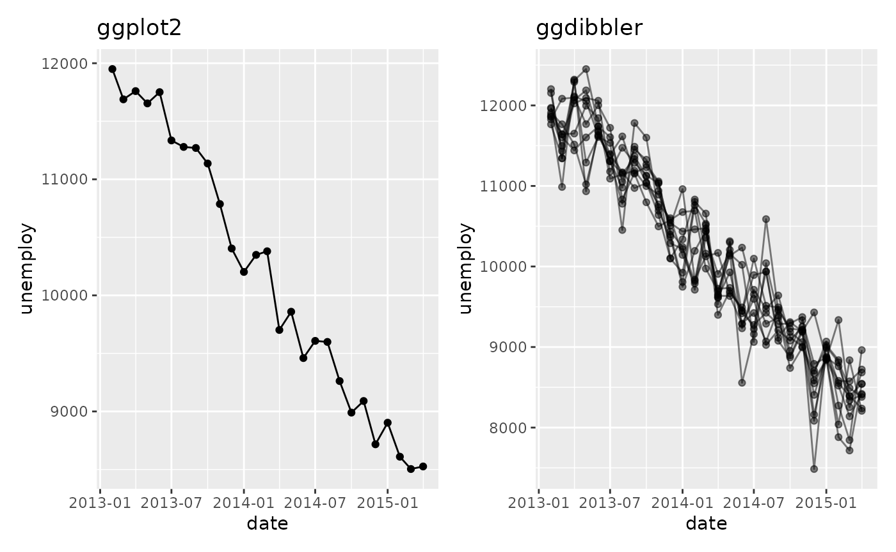
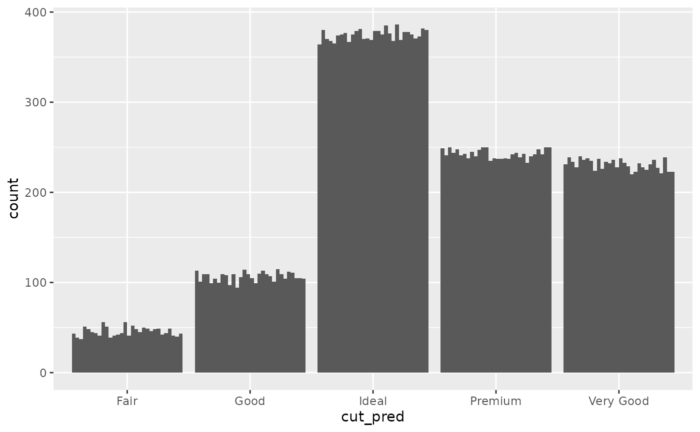
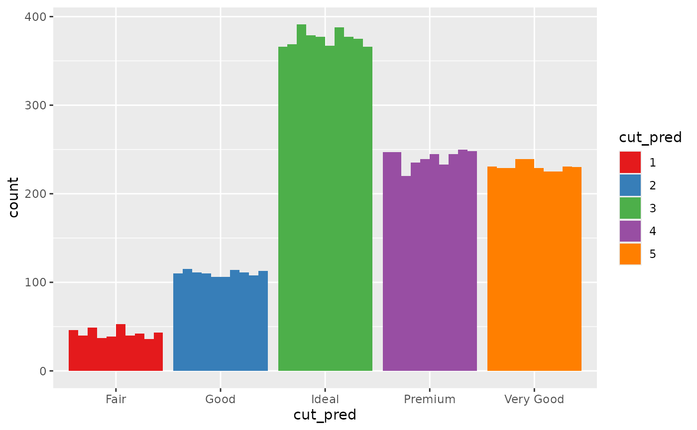
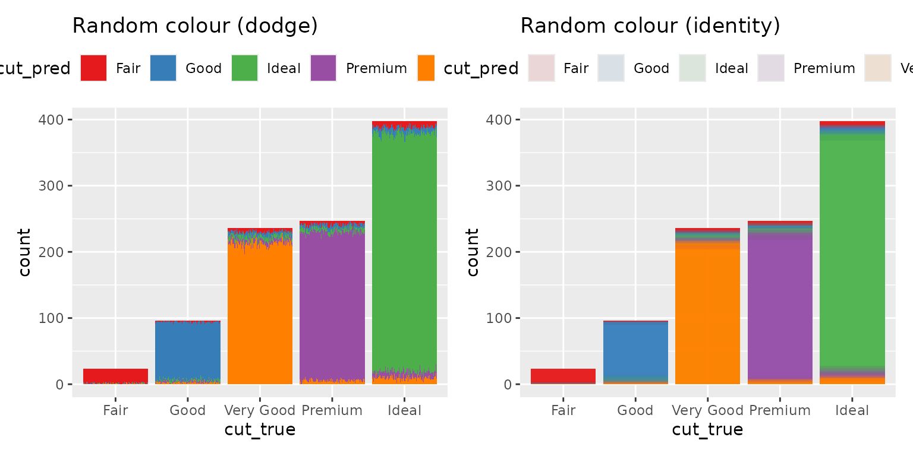

As the graphics made by ggdibbler are random variables
represented by a sample, they are random plots. This means that each
time you call a plot, it is different. This behaviour makes sense, as
every plot is just one of many possible outcomes you can have when you
represent a distribution by a sample. Technically the plots would be
identical if you set your times to be infinity, but an
infinite number of draws is just a tad too computationally expensive for
our package.
If you are used to the deterministic behaviour of ggplot, the randomness can be off-putting, although not technically incorrect. Most of these issue can be mitigated by using the seed option, but the behaviour can be surprising if you are not used to it (so we are documenting it here).
Saving plots
When you save a plot, ggplot2doesn’t technically save
the plot itself. It saves the code that makes the plot. It only actually
runs the code when ggplot_build() is called, which is only
called when you print the plot.
plot <- ggplot(uncertain_mtcars, aes(wt, mpg)) + geom_point_sample(times=5)
plot + plot
The two scatter plots above were called using the same variable
plot and would be identical if they were a ggplot, but you
can see they are slightly different.
Calling the same variable twice
ggdibbler assumes all aesthetic distributions passed are
independent, which means if you pass the same variable to two different
aesthetic, they will be different samples.
p1 <- ggplot(mtcars, aes(wt, wt)) + geom_point() +
ggtitle("ggplot2")
p2 <- ggplot(uncertain_mtcars, aes(wt, wt)) + geom_point_sample(times=5) +
ggtitle("ggdibbler")
p1 + p2
By the time your data gets to the Stat stage of the plot computation,
we no longer have the variable names. This means we can’t be sure which
variables are actually identical versus which variables only appear to
be identical. You can get the identical behaviour by one of the draws
using the after_stat function.
ggplot(uncertain_mtcars, aes(wt, after_stat(x))) + geom_point_sample(times=5) 
This issue is particularly problematic when you have multiple layers
using the same variable where the after_stat trick no
longer works. In this case so you will need to use the seed parameter to
ensure the draws are the same.
recent <- economics[economics$date > as.Date("2013-01-01"), ]
uncertain_recent <- uncertain_economics[uncertain_economics$date > as.Date("2013-01-01"), ]
p1 <- ggplot(recent, aes(date, unemploy)) +
geom_line() +
geom_point() +
ggtitle("ggplot2")
p2 <- ggplot(uncertain_recent, aes(date, unemploy)) +
geom_line_sample(alpha=0.5, seed=5)+
geom_point_sample(alpha=0.5, seed=5) +
ggtitle("ggdibbler")
p1 + p2
Random variables don’t always “look” random
In showing ggdibbler to people, I have noticed that
there are a few instances where the package does not behave in the way
they expect. Sometimes this is because of a bug on the packages part,
but I have also found that it can be because people are unsure what they
mean when they talk about uncertainty. ggdibbler will
always show you the plot you asked for, but it might not always be the
plot you think you asked for. This will be easiest to see with an
example.
Let’s say we are looking at the smaller_diamonds dataset
(which is just the diamonds dataset from
ggplot2, but… smaller) and we want to predict the cut using
the other variables. We make our fancy shmancy model, and then get a
predicted value for each class. Since our output is a prediction, we now
have a cut_true column, (our ground truth) and a
cut_pred which is our predicted distribution.
## # A tibble: 6 × 11
## cut_pred cut_true carat color clarity depth
## <dist> <ord> <dbl> <ord> <ord> <dbl>
## 1 Categorical[5] Very Good 0.55 F VS2 62.1
## 2 Categorical[5] Premium 2 G SI2 61.7
## 3 Categorical[5] Ideal 0.31 F VVS2 61.6
## 4 Categorical[5] Premium 1.52 I SI1 60.5
## 5 Categorical[5] Good 1.01 G VS2 62
## 6 Categorical[5] Ideal 0.82 I VS1 61.3
## # ℹ 5 more variables: table <dbl>, price <int>, x <dbl>, y <dbl>, z <dbl>You might want to know how many values end up in each group and how certain the model is in that prediction, so, you make the following bar chart:
ggplot(diamonds_pred, aes(x=cut_pred)) +
geom_bar_sample(times=30)
Looking at this plot, it is clear that the count value is uncertain, but
that uncertainty is coming from the uncertainty in the cut_prediction.
The cut_pred values don’t look very “uncertain”, because in this plot,
they are not. This is the reality of visualising uncertainty for signal
suppression. Since the stat_sample that is used to get
outcomes from the distribution is nested inside of ggplot’s
stat_count, the uncertainty in the prediction is carried
through to the variable the plot is designed to show, i.e. the count in
each category. If it makes you feel better, we can set the fill to be
the outputs so you can 100% see this is the case.
ggplot(diamonds_pred, aes(x=cut_pred)) +
geom_bar_sample(aes(fill=factor(after_stat(x))), times=30) +
labs(fill = "cut_pred")+
scale_fill_brewer(palette = "Set1")
Of course, you can also set the fill to be a second independent draw from the prediction distribution, but this would convey the wrong information. You would be implying far more uncertainty than is actually in the bar chart. Instead of drawing from one distribution, we are drawing from two independent distributions that technically represent the same variable.
The reality is, distribution variables do not have a set value, so if
their position on the x axis and their colour are not set by the
after_stat distribution outcomes …. what are they set by?
If you want the random variables anchored to a deterministic variable,
YOU need to decide what to anchor them to. You need to decide what your
random variables are conditional on. If you want them conditional on the
deterministic true value, you need to do that. Here is an
example where they are anchored to the ground truth value and we colour
by the prediction.
p2 <- ggplot(diamonds_pred, aes(x=cut_true)) +
geom_bar_sample(aes(fill= cut_pred), times=100,
position= "stack_dodge") +
theme(legend.position="top") +
scale_fill_brewer(palette = "Set1") +
ggtitle("Random colour (dodge)") +
theme(legend.position = "bottom")
p3 <- ggplot(diamonds_pred, aes(x=cut_true)) +
geom_bar_sample(aes(fill= cut_pred), times=100, alpha=0.1,
position= "stack_identity") +
theme(legend.position="top") +
scale_fill_brewer(palette = "Set1") +
ggtitle("Random colour (identity)") +
theme(legend.position = "bottom")
p2 + p3
The height of the bar represents the total number of values predicted as that class, and the proportion of the the bar that is filled in as that colour represents the probability that the observation is that class. You will notice that the y-axis now represents the count of a deterministic variable (so there is no random variation and it is easy to read) but the colour is random, so it does have variation.